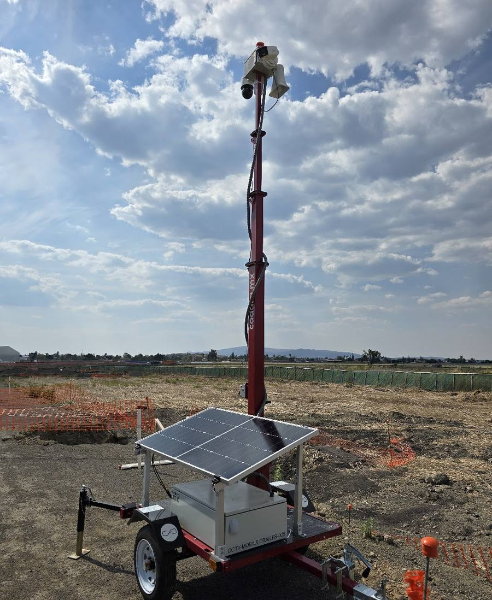

Videovigilancia
Torres móviles CCTV solares
Videovigilancia autónoma donde no hay energía ni red.
- Energía solar con baterías de respaldo
- Cámaras especializadas según la aplicación: perimetrales, térmicas, detección de intrusos y panorámicas de largo alcance
- Monitoreo remoto vía app y notificaciones por correo en eventos de detección
- Detección con inteligencia artificial de casco y chaleco: refuerza el uso de EPP y genera una alerta cuando un trabajador no lo porta
- Sirena de emergencia integrada: las torres de una misma obra se enlazan entre sí, y al presionar el botón de emergencia en cualquiera de ellas suenan todas a la vez